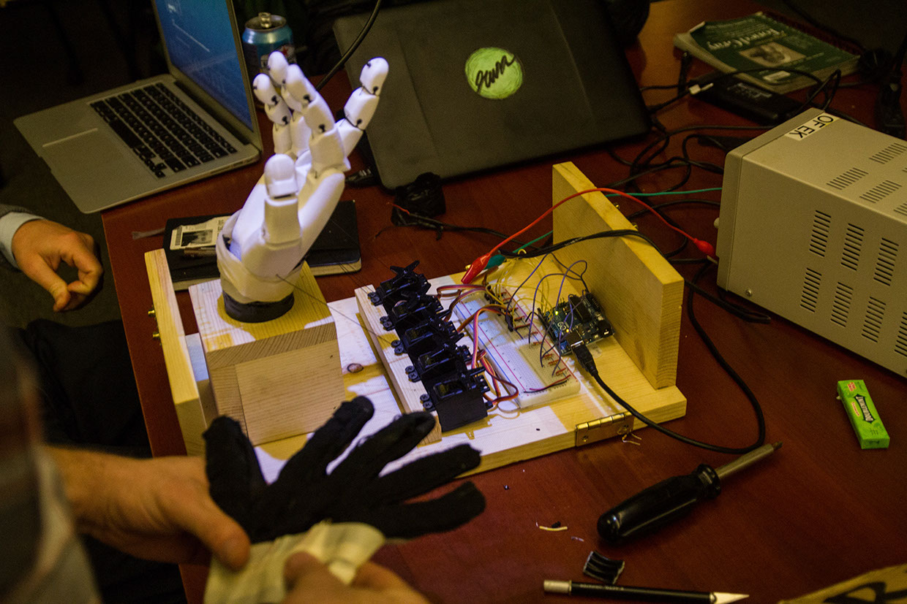
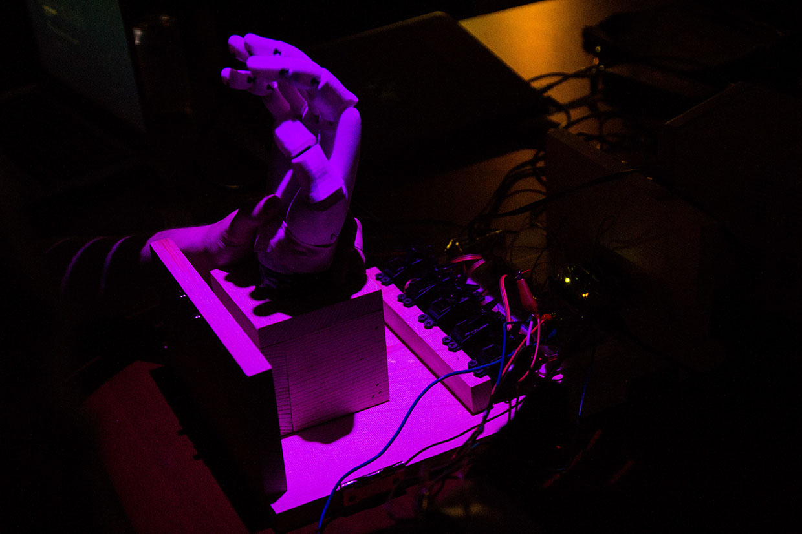
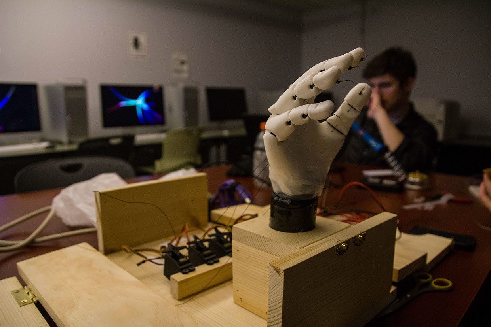

Flex Hand - 2014
I collaborated with Koy Suntichotinun and Max Crider on this 3d printed flex sensor controlled hand. Using the glove attached to the printed hand, users would see their gestures mirrored by it with corresponding mixed colors projected onto the hand. I helped out a bit with code work on movement and worked mostly on visual feedback (colored projections).



Documentation via Koy's website where you can find more images from the project.